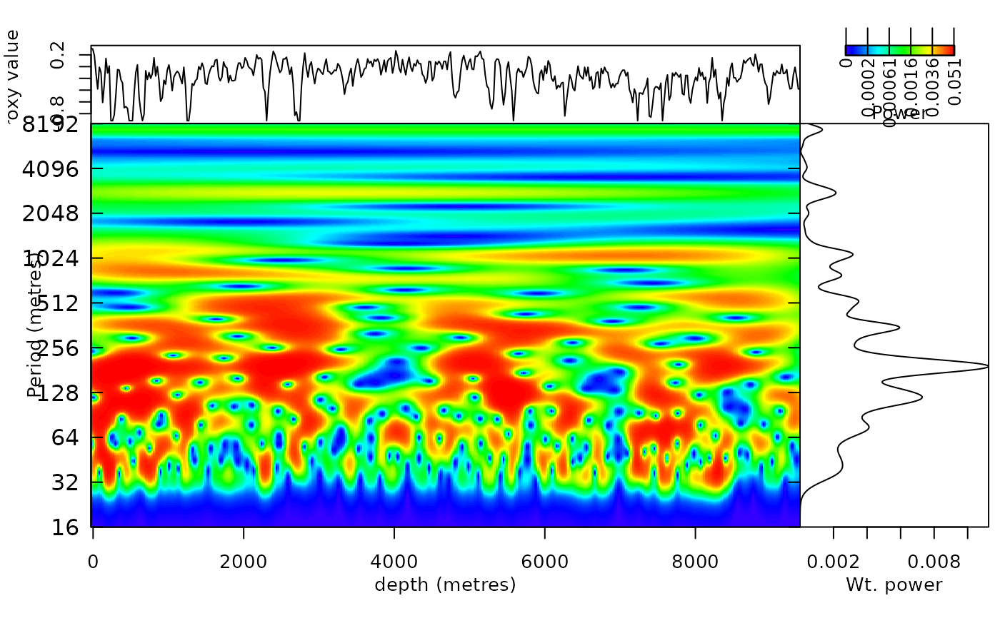
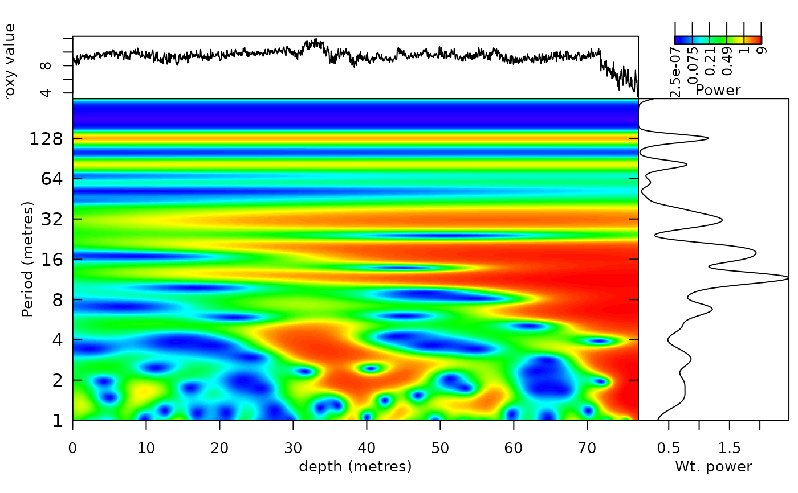
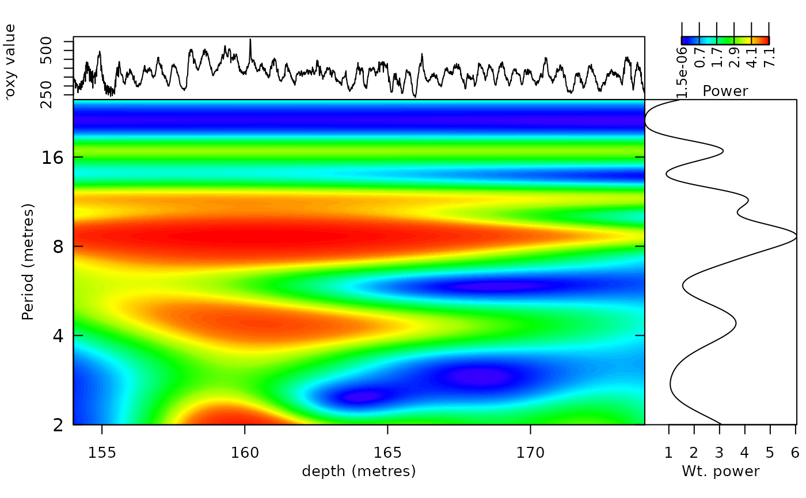

Plot adaptive wavelet scalogram using the outcome of the analyse_Awavelet function.
Usage
plot_Awavelet(
Awavelet = NULL,
lowerPeriod = NULL,
upperPeriod = NULL,
n.levels = 100,
palette_name = "viridis",
color_brewer = "viridis",
useRaster = TRUE,
periodlab = "Period (metres)",
x_lab = "depth (metres)",
keep_editable = FALSE,
dev_new = wr_dev_new_default(),
plot_dir = TRUE,
add_lines = NULL,
add_points = NULL,
add_abline_h = NULL,
add_abline_v = NULL,
add_MTM_peaks = FALSE,
add_data = TRUE,
add_avg = FALSE,
add_MTM = FALSE,
mtm_siglvl = 0.95,
demean_mtm = TRUE,
detrend_mtm = TRUE,
padfac_mtm = 5,
tbw_mtm = 3,
plot_horizontal = TRUE,
colour_brewer = NULL
)Arguments
- Awavelet
Adaptive wavelet object, the output of
analyse_Awavelet. Required (Default=NULL).- lowerPeriod
Shortest period shown on the period axis, in the depth/time unit of the record (numeric, > 0).
NULLuses the shortest period ofAwavelet.Default=NULL.- upperPeriod
Longest period shown on the period axis, in the depth/time unit of the record (numeric, >
lowerPeriod).NULLuses the longest period ofAwavelet.Default=NULL.- n.levels
Number of colour levels of the power scale (integer, > 1); the level boundaries are quantiles of the power.
Default=100.- palette_name
Name of the colour palette of the power (colour) scale, a character string. Which names are valid depends on
color_brewer:color_brewer = "grDevices":"rainbow","heat.colors","terrain.colors","topo.colors","cm.colors", or any of the 115hcl.colorspalettes (list them withgrDevices::hcl.pals()), for example"viridis","Plasma","Inferno","YlOrRd","Spectral","Blue-Red","Zissou 1".color_brewer = "viridis":"viridis","magma","inferno","plasma","cividis","rocket","mako","turbo".color_brewer = "RColorBrewer":"BrBG","PiYG","PRGn","PuOr","RdBu","RdGy","RdYlBu","RdYlGn","Spectral","Accent","Dark2","Paired","Pastel1","Pastel2","Set1","Set2","Set3","Blues","BuGn","BuPu","GnBu","Greens","Greys","Oranges","OrRd","PuBu","PuBuGn","PuRd","Purples","RdPu","Reds","YlGn","YlGnBu","YlOrBr","YlOrRd"(also listed bywr_brewer_palettes()).color_brewer = "colorRamps":"blue2green","blue2green2red","blue2red","blue2yellow","cyan2yellow","green2red","magenta2green","matlab.like","matlab.like2","ygobb".color_brewer = "scico"(all except"batlowK"need the scico package):"acton","bam","bamako","bamO","batlow","batlowK","batlowW","berlin","bilbao","broc","brocO","buda","bukavu","cork","corkO","davos","devon","fes","glasgow","grayC","hawaii","imola","lajolla","lapaz","lipari","lisbon","managua","navia","nuuk","oleron","oslo","roma","romaO","tofino","tokyo","turku","vanimo","vik","vikO".
Low power is drawn with the first colour of the palette and high power with the last.
Default="viridis".- color_brewer
Palette family from which
palette_nameis taken, a character string:"grDevices","viridis","RColorBrewer","colorRamps"or"scico"(the last one, except for"batlowK", needs the scico package). Seepalette_namefor the palette names of each family.Default="viridis".- useRaster
Draw the scalogram as a raster image (logical, TRUE or FALSE). Kept for compatibility: the current plotting code always draws a raster image, whatever the value.
Default=TRUE.- periodlab
Label of the period axis (character).
Default="Period (metres)".- x_lab
Label of the depth/time axis (character).
Default="depth (metres)".- keep_editable
Keep the graphical parameters (
par) of the plot after the function returns, so that features can be added to it (logical, TRUE or FALSE);FALSErestores the previous settings.Default=FALSE.- dev_new
Open a new plotting window for the plot (logical, TRUE or FALSE). The wavelet plots contain a raster image that needs more room than the small RStudio plot pane, which gives "figure margins too large" errors or clipped text, so a separate window is opened by default in the RStudio GUI. In every other front end (plain R, ESS, Positron, knitr, Rscript) the plot is drawn on the current device and no window is opened. Set TRUE or FALSE to force either behaviour, or set
options(waverider.dev_new = TRUE/FALSE).Default=wr_dev_new_default()(TRUE in the RStudio GUI, FALSE elsewhere).- plot_dir
Direction of the depth/time axis (logical, TRUE or FALSE):
TRUEplots increasing depth/time values from left to right (e.g. bore hole data that get older with depth);FALSEreverses the axis (e.g. outcrop logs where 0 m is the base of the section).Default=TRUE.- add_lines
Lines drawn on the scalogram (numeric matrix or data frame, or
NULL): depth/time in column 1 and one or more columns of period values (in the unit of the period axis), one line per column.Default=NULL.- add_points
Points drawn on the scalogram (numeric matrix or data frame, or
NULL): depth/time in column 1 and one or more columns of period values, one set of points per column.Default=NULL.- add_abline_h
Positions of horizontal lines drawn on the scalogram (numeric vector, or
NULL), e.g.c(2, 3, 5, 6): periods whenplot_horizontal = TRUE, depths/times whenplot_horizontal = FALSE.Default=NULL.- add_abline_v
Positions of vertical lines drawn on the scalogram (numeric vector, or
NULL), e.g.c(2, 3, 5, 6): depths/times whenplot_horizontal = TRUE, periods whenplot_horizontal = FALSE.Default=NULL.- add_MTM_peaks
Draw the periods of the significant MTM spectral peaks (see
mtm_siglvl) as dotted lines across the scalogram, and return these peaks invisibly (logical, TRUE or FALSE).Default=FALSE.- add_data
Plot the proxy record in an extra panel along the scalogram (logical, TRUE or FALSE).
Default=TRUE.- add_avg
Plot the average wavelet spectral power beside the scalogram (logical, TRUE or FALSE).
Default=FALSE.- add_MTM
Plot the MTM spectrum (
mtm) of the record beside the scalogram (logical, TRUE or FALSE).Default=FALSE.- mtm_siglvl
Significance level of the MTM spectrum (numeric, between 0 and 1) above which peaks are significant, passed to
astrochron::mtmassiglevel.Default=0.95.- demean_mtm
Remove the mean of the record before the MTM analysis (logical, TRUE or FALSE).
Default=TRUE.- detrend_mtm
Remove a linear trend from the record before the MTM analysis (logical, TRUE or FALSE).
Default=TRUE.- padfac_mtm
Zero-padding factor of the MTM analysis, passed to
astrochron::mtmaspadfac(numeric, >= 1).Default=5.- tbw_mtm
Time-bandwidth product of the MTM analysis, passed to
astrochron::mtmastbw(numeric, e.g. 2 or 3).Default=3.- plot_horizontal
Orientation of the plot (logical, TRUE or FALSE):
TRUEputs depth/time on the horizontal axis and period on the vertical axis;FALSEputs depth/time on the vertical axis.Default=TRUE.- colour_brewer
British spelling of
color_brewer, with the same options; if given (notNULL) it overridescolor_brewer.Default=NULL.
References
Roesch, A., & Schmidbauer, H. (2018). WaveletComp: Computational Wavelet Analysis. R package version 1.1. https://CRAN.R-project.org/package=WaveletComp
Moca, V. V., Bârzan, H., Nagy-Dăbâcan, A., & Mureșan, R. C. (2021). Time-frequency super-resolution with superlets. Nature Communications, 12(1), 337. doi:10.1038/s41467-020-20539-9
Author
plotting code based on the "wt.image" and "analyze.coherency" functions of the 'WaveletComp' R package
Examples
# \donttest{
#Example 1. A plot of a wavelet spectra using the Total Solar Irradiance
# data set of Steinhilber et al., (2012)
TSI_wt <-
analyse_Awavelet(
data = TSI,
dj = 1/200,
lowerPeriod = 16,
upperPeriod = 8192,
verbose = FALSE,
omega_min = 6,
omega_max = 12,
scaling = "log2",
alpha = 1
)
plot_Awavelet(
Awavelet = TSI_wt,
lowerPeriod = 16,
upperPeriod = 8192,
n.levels = 100,
palette_name = "rainbow",
color_brewer= "grDevices",
useRaster = TRUE,
periodlab = "Period (metres)",
x_lab = "depth (metres)",
keep_editable = FALSE,
dev_new=TRUE,
plot_dir = TRUE,
add_lines = NULL,
add_points= NULL,
add_abline_h = NULL,
add_abline_v = NULL,
add_MTM_peaks = FALSE,
add_data = TRUE,
add_avg = TRUE,
add_MTM = FALSE,
mtm_siglvl = 0.95,
demean_mtm = TRUE,
detrend_mtm = TRUE,
padfac_mtm = 5,
tbw_mtm = 3,
plot_horizontal=TRUE)

#Example 2. A plot of a wavelet spectra using the magnetic susceptibility
#data set of Pas et al., (2018)
mag_wt <-
analyse_Awavelet(
data = mag,
dj = 1/100,
lowerPeriod = 1,
upperPeriod = 254,
verbose = FALSE,
omega_min = 6,
omega_max = 12,
scaling = "log2",
alpha = 1
)
plot_Awavelet(
Awavelet = mag_wt,
lowerPeriod = 1,
upperPeriod = 254,
n.levels = 100,
palette_name = "rainbow",
color_brewer= "grDevices",
useRaster = TRUE,
periodlab = "Period (metres)",
x_lab = "depth (metres)",
keep_editable = FALSE,
dev_new=TRUE,
plot_dir = TRUE,
add_lines= NULL,
add_points= NULL,
add_abline_h = NULL,
add_abline_v = NULL,
add_MTM_peaks = FALSE,
add_data = TRUE,
add_avg = TRUE,
add_MTM = FALSE,
mtm_siglvl = 0.95,
demean_mtm = TRUE,
detrend_mtm = TRUE,
padfac_mtm = 5,
tbw_mtm = 3,
plot_horizontal=TRUE)

#Example 3. A plot of a wavelet spectra using the greyscale
# data set of Zeeden et al., (2013)
grey_wt <-
analyse_Awavelet(
data = grey,
dj = 1/200,
lowerPeriod = 2,
upperPeriod = 25,
verbose = FALSE,
omega_min = 6,
omega_max = 12,
scaling = "log2",
alpha = 1)
plot_Awavelet(
Awavelet = grey_wt,
lowerPeriod = 2,
upperPeriod = 25,
n.levels = 100,
palette_name = "rainbow",
color_brewer= "grDevices",
useRaster = TRUE,
periodlab = "Period (metres)",
x_lab = "depth (metres)",
keep_editable = FALSE,
dev_new=TRUE,
plot_dir = TRUE,
add_lines = NULL,
add_points= NULL,
add_abline_h = NULL,
add_abline_v = NULL,
add_MTM_peaks = FALSE,
add_data = TRUE,
add_avg = TRUE,
add_MTM = FALSE,
mtm_siglvl = 0.95,
demean_mtm = TRUE,
detrend_mtm = TRUE,
padfac_mtm = 5,
tbw_mtm = 3,
plot_horizontal=TRUE)

# }